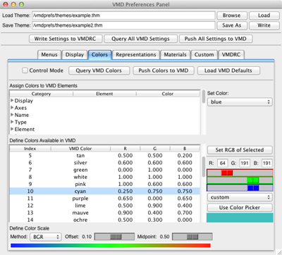

VMDPrefs GUI
VMDPrefs provides fine control over a wide array of user-customizable VMD environment settings via an easy-to-use graphical user interface (GUI).
No more searching for settings...
VMDPrefs groups related environment settings under a tabbed structure within a single plugin window, providing easy access to options currently spread across many different menus.
Tune VMD in real time...
VMDPrefs can both query current environment settings and push plugin settings to VMD in real-time.
Save customized VMD environments for future use...
VMDPrefs writes
theme
files for saving a full compliment of VMD environment settings that can be reloaded into the plugin at a later time. Theme files allow the user to switch between customized VMD environments with ease,
e.g., different profiles for viewing MD trajectories vs. designing publication graphics.
Automatically customize VMD from startup...
VMDPrefs can write a valid VMDRC file to configure the VMD environment automatically upon startup in a
set it and forget it
fashion. Users no longer need to learn Tcl or how to code these files by hand.
Custom extensions for advanced users...
VMDPrefs allows users to input and save custom Tcl code to theme and VMDRC files, enabling complete control over VMD.